scikit-笔记16:深入理解线性模型
Table of Contents
%matplotlib inline import numpy as np import matplotlib.pyplot as plt
1 Linear Regression
Linear models are useful when little data is available or for very large feature spaces as in text classification. In addition, they form a good case study for regularization.
1.1 what is a regularization
All linear models for regression learn a coefficient parameter coef_ and an
offset intercept_ to make predictions using a linear combination of features:
regression fn model:
y_pred = x_test[0] * coef_[0] + … + x_test[n_features-1] * coef_[n_features-1] + intercept_
1.1.1 difference due to regularization
The difference between the linear models for regression is what kind of
restrictions or penalties are put on coef_ as regularization , in addition
to fitting the training data well.
1.1.2 linear regression is bad due to no regularization
The most standard linear model is the 'ordinary least squares regression, often
simply called 'linear regression'. It doesn't put any additional restrictions on
coef_, so when the number of features is large, it becomes ill-posed and the
model overfits.
Let us generate a simple simulation, to see the behavior of these models.
make_regression can create a data set.
from sklearn.datasets import make_regression from sklearn.model_selection import train_test_split X, y, true_coefficient = make_regression(n_samples=200, n_features=30, n_informative=10, noise=100, coef=True, random_state=5) X_train, X_test, y_train, y_test = train_test_split(X, y, random_state=5, train_size=60, test_size=140) print(X_train.shape) # (60,30) print(y_train.shape) # (60,)
1.2 Linear Regression (without Regularization)
\(\text{min}_{w, b} \sum_i || w^\mathsf{T}x_i + b - y_i||^2\)
about score, which is an evaluation of the model:
- every model has a built-in method, almost with
'model_name'.score(dataset, labelset) - many other evaluation method inside
sklearn.metrics, almost with'scorer_name'.(predict_label, truelabel), liker2_score,adjusted_rand_score, etc
from sklearn.linear_model import LinearRegression linear_regression = LinearRegression().fit(X_train, y_train) print("R^2 on training set: %f" % linear_regression.score(X_train, y_train)) print("R^2 on test set: %f" % linear_regression.score(X_test, y_test))
from sklearn.metrics import r2_score print(r2_score(np.dot(X, true_coefficient), y))
plt.figure(figsize=(10, 5)) print (true_coefficient.shape) coefficient_sorting = np.argsort(true_coefficient)[::-1] #<- inverse the order of result of argsort plt.plot(true_coefficient[coefficient_sorting], "o", label="true") plt.plot(linear_regression.coef_[coefficient_sorting], "o", label="linear regression") plt.legend()
<matplotlib.legend.Legend at 0x7ff5069e0438>
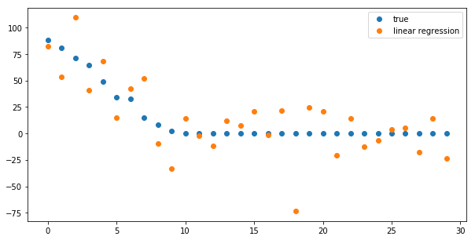
from sklearn.model_selection import learning_curve def plot_learning_curve(est, X, y): training_set_size, train_scores, test_scores = learning_curve(est, X, y, train_sizes=np.linspace(.1, 1, 20)) estimator_name = est.__class__.__name__ line = plt.plot(training_set_size, train_scores.mean(axis=1), '--', label="training scores " + estimator_name) plt.plot(training_set_size, test_scores.mean(axis=1), '-', label="test scores " + estimator_name, c=line[0].get_color()) plt.xlabel('Training set size') plt.legend(loc='best') plt.ylim(-0.1, 1.1) plt.figure() plot_learning_curve(LinearRegression(), X, y)
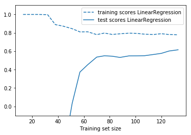
1.3 Ridge Regression (L2 Regularization)
The Ridge estimator is a simple regularization (called l2 penalty) of the ordinary LinearRegression. In particular, it has the benefit of being not computationally more expensive than the ordinary least square estimate.
\[ \text{min}_{w,b} \sum_i || w^\mathsf{T}x_i + b - y_i||^2 + \alpha ||w||_2^2\]
The amount of regularization is set via the alpha parameter of the Ridge.
from sklearn.linear_model import Ridge ridge_models = {} training_scores = [] test_scores = [] for alpha in [100, 10, 1, .01]: ridge = Ridge(alpha=alpha).fit(X_train, y_train) training_scores.append(ridge.score(X_train, y_train)) test_scores.append(ridge.score(X_test, y_test)) ridge_models[alpha] = ridge plt.figure() plt.plot(training_scores, label="training scores") plt.plot(test_scores, label="test scores") plt.xticks(range(4), [100, 10, 1, .01]) plt.legend(loc="best")
<matplotlib.legend.Legend at 0x7ff5069675c0>
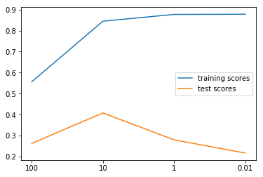
plt.figure(figsize=(10, 5)) plt.plot(true_coefficient[coefficient_sorting], "o", label="true", c='b') for i, alpha in enumerate([100, 10, 1, .01]): plt.plot(ridge_models[alpha].coef_[coefficient_sorting], "o", label="alpha = %.2f" % alpha, c=plt.cm.summer(i / 3.) #<- how to give a gradually changed color ) plt.legend(loc="best")
<matplotlib.legend.Legend at 0x7ff50680fc50>
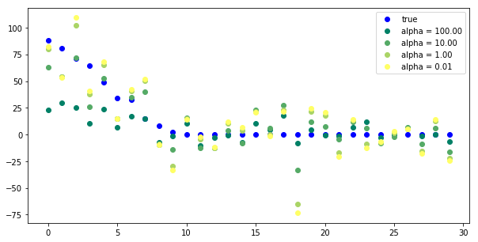
Tuning alpha is critical for performance.
plt.figure()
plot_learning_curve(LinearRegression(), X, y)
plot_learning_curve(Ridge(alpha=10), X, y)
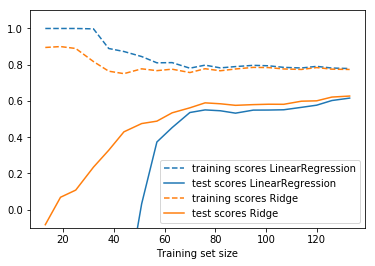
1.4 Lasso (L1 Regularization)
The Lasso estimator is useful to impose sparsity on the coefficient. In other words, it is to be prefered if we believe that many of the features are not relevant. This is done via the so-called l1 penalty.
\(\text{min}_{w, b} \sum_i \frac{1}{2} || w^\mathsf{T}x_i + b - y_i||^2 + \alpha ||w||_1\)
from sklearn.linear_model import Lasso lasso_models = {} training_scores = [] test_scores = [] for alpha in [30, 10, 1, .01]: lasso = Lasso(alpha=alpha).fit(X_train, y_train) training_scores.append(lasso.score(X_train, y_train)) test_scores.append(lasso.score(X_test, y_test)) lasso_models[alpha] = lasso plt.figure() plt.plot(training_scores, label="training scores") plt.plot(test_scores, label="test scores") plt.xticks(range(4), [30, 10, 1, .01]) plt.legend(loc="best")
<matplotlib.legend.Legend at 0x7f9c30ff9550>
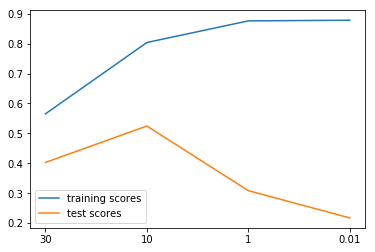
plt.figure(figsize=(10, 5)) plt.plot(true_coefficient[coefficient_sorting], "o", label="true", c='b') for i, alpha in enumerate([30, 10, 1, .01]): plt.plot(lasso_models[alpha].coef_[coefficient_sorting], "o", label="alpha = %.2f" % alpha, c=plt.cm.summer(i / 3.)) plt.legend(loc="best")
<matplotlib.legend.Legend at 0x7f9c30ed32e8>
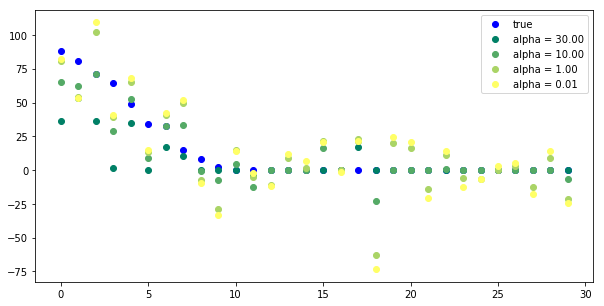
plt.figure(figsize=(10, 5)) plot_learning_curve(LinearRegression(), X, y) plot_learning_curve(Ridge(alpha=10), X, y) plot_learning_curve(Lasso(alpha=10), X, y)
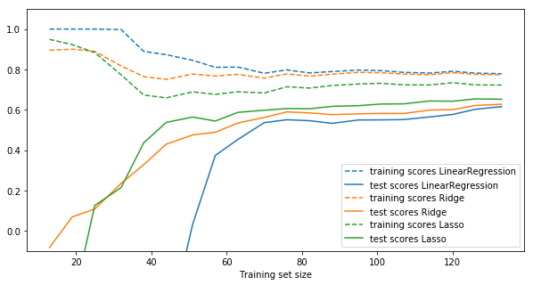
Instead of picking Ridge or Lasso, you can also use ElasticNet, which uses both forms of regularization and provides a parameter to assign a weighting between them. ElasticNet typically performs the best amongst these models.
2 Linear Classification
2.1 Bi-class linear classification
2.1.1 regression model vs. classification model
Regression fn model:
y_pred = x_test[0] * coef_[0] + … + x_test[n_features-1] * coef_[n_features-1] + intercept_
All linear models for classification learn a coefficient parameter coef_ and
an offset intercept_ to make predictions using a linear combination of
features:
Classification fn model:
y_pred = x_test[0] * coef_[0] + … + x_test[n_features-1] * coef_[n_features-1] + intercept_ > 0
As you can see, this is very similar to regression, only that a threshold at zero is applied.
Again, the difference between the linear models for classification what kind of regularization is put on coef_ and intercept_, but there are also minor differences in how the fit to the training set is measured (the so-called loss function).
The two most common models for linear classification are the linear SVM as
implemented in LinearSVC and LogisticRegression.
A good intuition for regularization of linear classifiers is that with high regularization, it is enough if most of the points are classified correctly. But with less regularization, more importance is given to each individual data point. This is illustrated using an linear SVM with different values of C below.
2.1.2 The influence of C in LinearSVC
In LinearSVC, the C parameter controls the regularization within the model.
Lower C entails more regularization and simpler models, whereas higher C entails less regularization and more influence from individual data points.
from figures import plot_linear_svc_regularization plot_linear_svc_regularization()
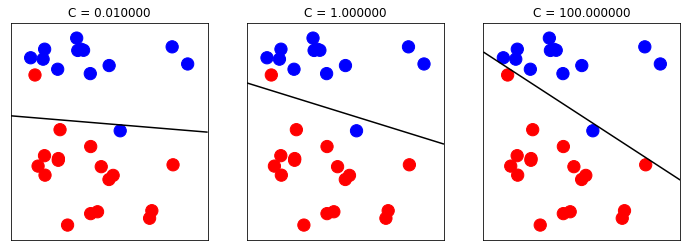
2.1.3 l1 regularization vs. l2 regularization
Similar to the Ridge/Lasso separation, you can set the penalty parameter to:
- 'l1' to enforce sparsity of the coefficients (similar to Lasso)
- 'l2' to encourage smaller coefficients (similar to Ridge).
We can see,
. xxx regularization apply on yyy , yyy will change to zzz . | | | . v v v . l1 coef_ sparse coef_ . l2 coef_ small coef_
2.2 Multi-class linear classification
from sklearn.datasets import make_blobs plt.figure() X, y = make_blobs(random_state=42) print (X.shape, y.shape) #<- two features print (X, y) #<- two features plt.scatter(X[:, 0], X[:, 1], c=plt.cm.spectral(y / 2.));
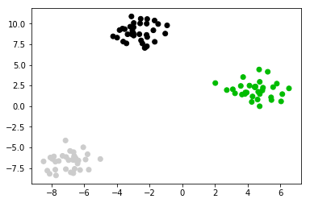
from sklearn.svm import LinearSVC linear_svm = LinearSVC().fit(X, y) print(linear_svm.coef_.shape) print(linear_svm.intercept_.shape)
2.2.1 shape of coef_ and intercept_
you can see if you want to : separte the 2 class, you should need 1 split line; separte the 3 class, you should need 3 split line; separte the 4 class, you should need 6 split line;
So the shape of coef_ should be 3 in this case.
2.2.2 how to plot these 3 lines
You should note, why we use the code shown below, to plot split line. As we said that fn model for classification is :
y_pred = x_test[0] * coef_[0] + … + x_test[n_features-1] * coef_[n_features-1] + intercept_ > 0
We get 2d coef_ for each line(totally we have 3 lines), for each line we should make make one dimension of the 2d point(x1,x2), as x-axis and another as y-axis, to plot the line for example:
- x1 –> x-axis
- x2 –> y-axis
In another word, this means that we should make point
- x1 as 'x' the independent variable;
- x2 as 'y' the dependent variable;
x_test[0] * coef_[0] + x_test[1] * coef_[1] + intercept_ = 0
x_test[1] = - (x_test[0] * coef_[0] + intercept_) / coef_[1]
This is the origin of code below:
plt.plot(line, -(line * coef[0] + intercept) / coef[1])
plt.scatter(X[:, 0], X[:, 1], c=plt.cm.spectral(y / 2.)) line = np.linspace(-15, 15) for coef, intercept in zip(linear_svm.coef_, linear_svm.intercept_): plt.plot(line, -(line * coef[0] + intercept) / coef[1]) plt.ylim(-10, 15) plt.xlim(-10, 8);
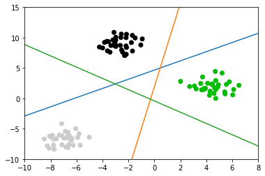
Points are classified in a one-vs-rest fashion (aka one-vs-all), where we assign a test point to the class whose model has the highest confidence (in the SVM case, highest distance to the separating hyperplane) for the test point.
3 EXERCISE
- Use LogisticRegression to classify the digits data set, and grid-search the C parameter.
How do you think the learning curves above change when you increase or decrease alpha? Try changing the alpha parameter in ridge and lasso, and see if your intuition was correct.
from sklearn.datasets import load_digits from sklearn.linear_model import LogisticRegression digits = load_digits() X_digits, y_digits = digits.data, digits.target
4 Misc tools
4.1 scikit-learn
4.1.1 ML models by now
- from sklearn.datasets import make_blobs
- from sklearn.datasets import make_regression *
- from sklearn.datasets import load_iris
- from sklearn.datasets import load_digits
- from sklearn.model_selection import train_test_split
- from sklearn.model_selection import cross_val_score
- from sklearn.model_selection import KFold
- from sklearn.model_selection import StratifiedKFold
- from sklearn.model_selection import ShuffleSplit
- from sklearn.model_selection import GridSearchCV
- from sklearn.model_selection import learning_curve *
- from sklearn.linear_model import LogisticRegression
- from sklearn.linear_model import LinearRegression
- from sklearn.linear_model import Ridge *
- from sklearn.linear_model import Lasso *
- from sklearn.linear_model import ElasticNet *
- from sklearn.neighbors import KNeighborsClassifier
- from sklearn.neighbors import KNeighborsRegressor
- from sklearn.preprocessing import StandardScaler
- from sklearn.decomposition import PCA
- from sklearn.metrics import confusion_matrix, accuracy_score
- from sklearn.metrics import adjusted_rand_score
- from sklearn.metrics.scorer import SCORERS
- from sklearn.metrics import r2_score *
- from sklearn.cluster import KMeans
- from sklearn.cluster import KMeans
- from sklearn.cluster import MeanShift
- from sklearn.cluster import DBSCAN # <<< this algorithm has related sources in LIHONGYI's lecture-12
- from sklearn.cluster import AffinityPropagation
- from sklearn.cluster import SpectralClustering
- from sklearn.cluster import Ward
- from sklearn.metrics import confusion_matrix
- from sklearn.metrics import accuracy_score
- from sklearn.metrics import adjusted_rand_score
- from sklearn.metrics import classification_report
- from sklearn.feature_extraction import DictVectorizer
- from sklearn.feature_extraction.text import CountVectorizer
- from sklearn.feature_extraction.text import TfidfVectorizer
- from sklearn.preprocessing import Imputer
- from sklearn.dummy import DummyClassifier
- from sklearn.pipeline import make_pipeline
- from sklearn.svm import LinearSVC
- from sklearn.svm import SVC
4.1.2 make_regression
Generate a random regression problem.
The input set can either be well conditioned (by default) or have a low rank-fat tail singular profile. See make_low_rank_matrix for more details.
The output is generated by applying a (potentially biased) random linear regression model with n_informative nonzero regressors to the previously generated input and some gaussian centered noise with some adjustable scale.
make_regression(n_samples=100, #<- number of samples. n_features=100, #<- number of features. n_informative=10, #<- number of truely useful features n_targets=1, #<- the dimension of y output bias=0.0, #<- bias term in underlying linear model effective_rank=None,#<- The approximate number of singular #vectors required to explain most of the #input data by linear combinations. tail_strength=0.5, noise=0.0, #<- The standard deviation of the gaussian #noise applied to the output. shuffle=True, coef=False, #<- whether return coef of this undelying #linear model random_state=None)
4.1.3 learning_curve
Learning curve.
Determines cross-validated training and test scores for different training set sizes.
A cross-validation generator splits the whole dataset k times in training and test data. Subsets of the training set with varying sizes will be used to train the estimator and a score for each training subset size and the test set will be computed. Afterwards, the scores will be averaged over all k runs for each training subset size.
training_set_size, train_scores, test_scores = learning_curve( est, #<- the ML model used to predict X, #<- dataset passed to this model y, #<- labels passed to this model train_sizes=np.linspace(.1, 1, 20) #<- commonly usage way: linspace(.1,1, num) )
0 - ee240ab5-f4df-4c6b-8fa9-dc13d1590680
4.1.3.1 return
train_sizes_abs : array, shape = (n_unique_ticks,), dtype int
Numbers of training examples that has been used to generate the learning curve. Note that the number of ticks might be less than n_ticks because duplicate entries will be removed.
train_scores : array, shape (n_ticks, n_cv_folds)
Scores on training sets.
test_scores : array, shape (n_ticks, n_cv_folds)
Scores on test set.
4.1.4 Ridge
Ridge is another linear_model, and has the identical inteface with linear_model on methods invocation
- ridge = Ridge()
- ridge.fit(X,y)
- ridge.predict(X)
- ridge.score(X,y) :
model_name.score(X,y)
4.1.5 Lasso
Lasso is another linear_model, and has the identical inteface with linear_model on methods invocation
- lasso = Lasso()
- lasso.fit(X,y)
- lasso.predict(X)
- lasso.score(X,y) :
model_name.score(X,y)
4.2 Linear algebra
4.2.1 SVD
The singular value decomposition of a matrix A is the factorization of A into the product of three matrices \(A = UDV^T\) where the columns of U and V are orthonormal and the matrix D is diagonal with positive real entries.
4.3 scikit user guid
4.3.1 5.4. Sample generators
http://scikit-learn.org/stable/datasets/index.html#sample-generators
In addition, scikit-learn includes various random sample generators that can be used to build artificial datasets of controlled size and complexity.
4.3.1.1 5.4.1. Generators for classification and clustering
These generators produce a matrix of features and corresponding discrete targets.
4.3.1.2 5.4.1.1. Single label
Both make_blobs and make_classification create multiclass datasets by
allocating each class one or more normally-distributed clusters of points.
make_blobs provides greater control regarding the centers and standard
deviations of each cluster, and is used to demonstrate clustering.
make_classification specialises in introducing noise by way of: correlated,
redundant and uninformative features; multiple Gaussian clusters per class;
and linear transformations of the feature space.
make_gaussian_quantiles divides a single Gaussian cluster into near-equal-size
classes separated by concentric hyperspheres.
make_hastie_10_2 generates a similar binary, 10-dimensional problem.
../_images/sphx_glr_plot_random_dataset_0011.png
make_circles and make_moons generate 2d binary classification datasets that
are challenging to certain algorithms (e.g. centroid-based clustering or linear
classification), including optional Gaussian noise. They are useful for
visualisation. produces Gaussian data with a spherical decision boundary for
binary classification.
4.3.1.3 5.4.1.2. Multilabel
make_multilabel_classification generates random samples with multiple labels,
reflecting a bag of words drawn from a mixture of topics. The number of topics
for each document is drawn from a Poisson distribution, and the topics
themselves are drawn from a fixed random distribution. Similarly, the number of
words is drawn from Poisson, with words drawn from a multinomial, where each
topic defines a probability distribution over words. Simplifications with
respect to true bag-of-words mixtures include:
Per-topic word distributions are independently drawn, where in reality all would be affected by a sparse base distribution, and would be correlated. For a document generated from multiple topics, all topics are weighted equally in generating its bag of words. Documents without labels words at random, rather than from a base distribution.
../_images/sphx_glr_plot_random_multilabel_dataset_0011.png
4.3.1.4 5.4.1.3. Biclustering
make_biclusters(shape, n_clusters[, noise, …]) Generate an array with constant block diagonal structure for biclustering. make_checkerboard(shape, n_clusters[, …]) Generate an array with block checkerboard structure for biclustering.
4.3.1.5 5.4.2. Generators for regression
make_regression produces regression targets as an optionally-sparse random
linear combination of random features, with noise. Its informative features
may be uncorrelated, or low rank (few features account for most of the
variance).
Other regression generators generate functions deterministically from randomized features.
make_sparse_uncorrelated produces a target as a linear combination of four
features with fixed coefficients.
Others encode explicitly non-linear relations:
make_friedman1 is related by polynomial and sine transforms;
make_friedman2 includes feature multiplication and reciprocation; and
make_friedman3 is similar with an arctan transformation on the target.
4.3.1.6 5.4.3. Generators for manifold learning
make_s_curve([n_samples, noise, random_state]) Generate an S curve dataset. make_swiss_roll([n_samples, noise, random_state]) Generate a swiss roll dataset.
4.3.1.7 5.4.4. Generators for decomposition
make_low_rank_matrix([n_samples, …]) Generate a mostly low rank matrix with bell-shaped singular values make_sparse_coded_signal(n_samples, …[, …]) Generate a signal as a sparse combination of dictionary elements. make_spd_matrix(n_dim[, random_state]) Generate a random symmetric, positive-definite matrix. make_sparse_spd_matrix([dim, alpha, …]) Generate a sparse symmetric definite positive matrix.
4.4 Numpy
4.4.1 np.argsort
Returns the indices that would sort an array, for multiple dimension array, sort and return each array('[]' denote an array) itself.
Perform an indirect sort along the given axis using the algorithm specified by the kind keyword. It returns an array of indices of the same shape as a that index data along the given axis in sorted order.
import numpy as np arr = np.array([[4,2,1,0],[5,9,8,7]]) argarr = np.argsort(arr) argarr
array([[3, 2, 1, 0], [0, 3, 2, 1]])
4.5 Matplotlib
4.5.1 how to give a gradually changed color
plt.figure(figsize=(10, 5)) plt.plot(true_coefficient[coefficient_sorting], "o", label="true", c='b') for i, alpha in enumerate([100, 10, 1, .01]): plt.plot(ridge_models[alpha].coef_[coefficient_sorting], "o", label="alpha = %.2f" % alpha, c=plt.cm.summer(i / 3.) #<- how to give a gradually changed color ) plt.legend(loc="best")
4.5.2 what are tickets
specify the indexs of axes
import matplotlib.pyplot as plt fig, ax = plt.subplots() ax.set_xticks([0.15, 0.68, 0.97]) ax.set_yticks([0.2, 0.55, 0.76]) plt.show()
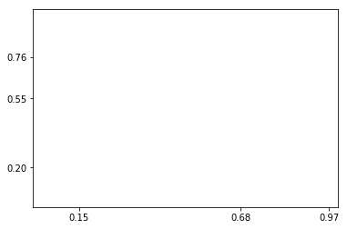